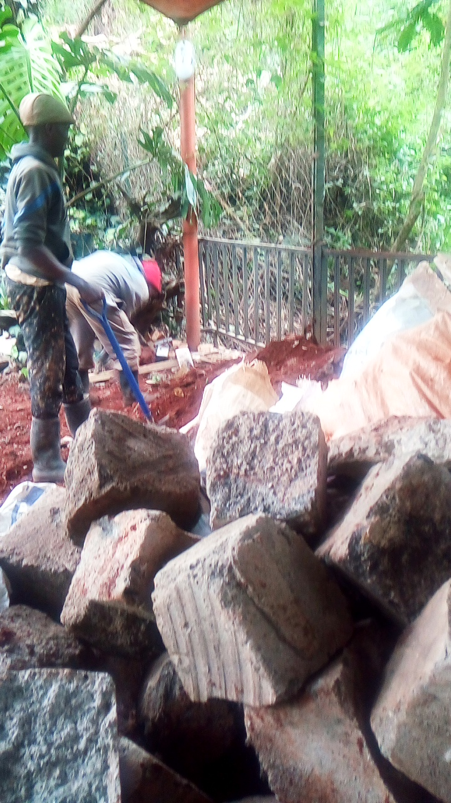
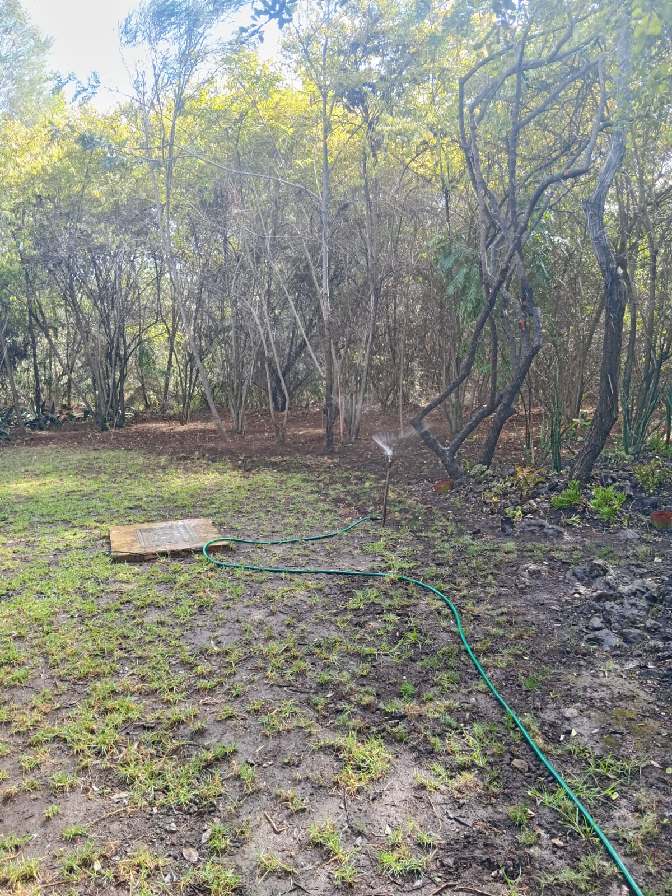
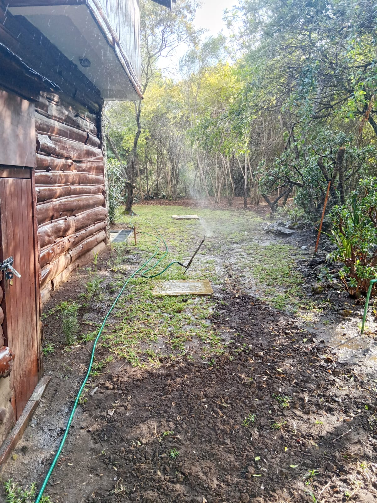

1. Mucheru World of Golf — Dam Works, Earthmoving, Teebox & Drainage
Dam 2 murram deepening, soil levelling on old access roads, teebox no. 5 completed & sub-surface drainage pipes for greens 1, 2, and 3
- Dam 2 Deepening & Murram Excavation: Heavy excavation progressed intensively at Dam 2, removing dense murram strata to increase the depth of the reservoir basin and maximize future water storage volume.
- Murram Relocation to Clubhouse Area: Tipper trucks transported 26 total loads of excavated murram from the dam basin, neatly stockpiling them in mounds adjacent to the proposed clubhouse zone for upcoming construction and grading works.
- Old Access Roads Soil Levelling: Continuous ground levelling and soil grading were executed across old roads within the golf course to establish smooth terrain transitions and clean surface profiles.
- Teebox No. 5 Levelling Completed: Soil spreading, grading, and compaction of Teebox No. 5 were successfully completed, establishing a raised, level tee platform along the boundary perimeter.
- Heavy Machinery Operating Hours: Sustained equipment deployment with the hydraulic excavator running for 6 hours 30 minutes and the backhoe loader operating for 4 hours 30 minutes.
| Equipment / Resource | Operating Time / Volume | Operational Scope & Activity |
|---|---|---|
| Hydraulic Excavator | 6 Hours 30 Minutes | Dam 2 murram excavation, reservoir deepening & tipper loading |
| Backhoe Loader | 4 Hours 30 Minutes | Soil levelling on old golf course roads & teebox no. 5 grading |
| Tipper Lorry Haulage | 26 Total Trips | Haulage and stockpiling of excavated murram next to clubhouse area |
🎯 Milestone Achieved: Teebox No. 5 Levelling Completed
Sub-base earthwork, rough grading, and platform levelling for Teebox No. 5 have been fully executed to design elevation.
- Drainage PVC Pipes Laid in Trenches: Dedicated sub-surface drainage lines for Greens 1, 2, and 3 were set into place along precisely graded foundation trenches.
- Geotextile Netting Protection: Slotted drainage PVC pipes were enveloped in protective geotextile mesh netting sleeves to prevent silt ingress while facilitating high-volume water percolation.
- Ballast Stone Backfilling: Clean crushed ballast stone was placed and backfilled directly over the sleeved PVC drainage pipes along the hardcore stone sub-base layer to ensure optimal subsurface permeability and long-term turf health.
📷 Mucheru World of Golf Visual Documentation

Dam 2 Basin Deepening & Excavation
Hydraulic excavator actively digging out dense murram from the Dam 2 reservoir floor with tipper trucks lined up along the bank.

Excavated Murram Stockpiled near Clubhouse
Substantial mounds of rich murram transported across 26 haulage trips and neatly stockpiled adjacent to the clubhouse construction zone.

Teebox No. 5 Levelling Completed
Elevated, graded teebox platform showing uniform compaction along the boundary fence with haulage trucks in the distance.

Old Roads Murram Levelling
Earthmoving and grading progress on historical internal roadways, restoring consistent ground elevations across the course.

Greens Drainage Pipes Wrapped in Netting
Slotted PVC drainage pipes covered in geotextile filter netting positioned in trenches among the hardcore green foundation rocks.

Ballast Backfilling over Drainage Pipes
Close-up view of drainage trench filled with clean crushed ballast stone over the piped channel to guarantee free water drainage.

Greens 1–3 Sub-Base Drainage Network
Ground crews systematically laying drainage pipe runs and packing ballast within the hardcore stone sub-base bed.
2. Chaka Farms — Dairy Yield, Canine Unit, Logistics & Rooftop Setup
Dairy production logs, cowshed power-wash, timber salvage, canine commands and wound care, guesthouse rooftop boardroom setup
- Morning & Evening Milking Logs: Daily milking completed smoothly, registering a combined total yield of 6.0 Litres of fresh dairy milk.
- Cowshed & Cattle Pen Power-Washing: Morning sanitization of the dairy pens conducted; stone-paved floor and drainage gutters were thoroughly scrubbed, water-flushed, and disinfected to maintain top-tier herd hygiene.
| Production Session | Morning Milking | Evening Milking | Total Daily Yield |
|---|---|---|---|
| Fresh Milk Yield | 4.0 Litres | 2.0 Litres | 6.0 Litres |
- Kennel Sanitation & Morning Protocols: Complete morning washing, disinfection, and drying of all canine accommodation stalls and runs.
- Kennel Manners & Impulse Control: Rigorous door-boundary and feeding manners drills, requiring the dogs to hold calm sit-stays prior to entry, release, and feeding.
- Off-Leash Exercise & Livestock Socialization: The dogs enjoyed open-pasture off-leash walking, demonstrating calm behavior and disciplined socialization while walking alongside grazing sheep and goats.
- Advanced Command Drills: Structured training sessions conducted on trick and obedience commands including the paw command, spin command, and prolonged impulse control drills.
- Health Monitoring (Logan's Wound Care): Logan presented a minor superficial skin wound on his back. The area was gently cleaned, disinfected with antiseptic, and is being carefully monitored by Willy for prompt healing.
- Felled Tree Posts Transport (Overseen by Kinoti): Harvested timber posts and tree poles from the golf course clearing site were loaded onto tractor trailers and hauled to Chaka Farms for farm fencing and property boundaries.
- General Compound Cleanliness (Overseen by Margaret & Monica): Sweeping, lawn trimming, and meticulous waste collection conducted across all farm compound yards and shared pathways.
- Guesthouse Rooftop Executive Boardroom (Overseen by Mr. Gichuhi): Full assembly and styling of the guesthouse rooftop terrace executive boardroom completed. Features solid handcrafted live-edge timber tables, rustic carved high-back chairs, potted succulents, a mounted high-definition presentation screen, and all-weather canopy shade.
- Guesthouse Lawn Outdoor Relaxation Setup (Overseen by Mr. Gichuhi): Outdoor live-edge seating set arranged on the stone patio along the lawn path leading to the guesthouse.
🏢 Milestone Achieved: Guesthouse Rooftop Executive Boardroom Complete
The rooftop conference facility has been fully furnished with custom artisanal woodwork, audio-visual display, and canopy shelter, providing a premium executive meeting venue overlooking the farm landscape.
📷 Chaka Farms Visual Documentation

Dairy Cowshed Power-Washing
Attendant in overalls and boots pressure-washing the stone-paved floor and drainage gutters inside the dairy shed.

Cattle Pen Floor Scrubbing
Thorough scrub-down and water flushing of the milking stall floor to ensure optimum hygiene and cow comfort.

Felled Timber Posts Transport
Red tractor trailer carrying a full haul of trimmed tree posts and timber poles from the golf course to Chaka Farms.

Logan's Wound Care & Health Check
Inspection and antiseptic cleaning of a minor skin irritation on White Swiss Shepherd Logan's back, now healing well.

Rooftop Boardroom Setup Completed
Full view of the magnificent live-edge executive conference table, carved armchairs, and display monitor under the rooftop canopy.

Executive Rooftop Meeting Terrace
Panoramic perspective of the guesthouse rooftop boardroom terrace adorned with potted plants and framed by lush surrounding tree canopies.

Guesthouse Lawn Outdoor Seating
Handcrafted live-edge hardwood table and chairs positioned on the stone walkway leading toward the guesthouse entrance.
3. Chaka Farms & Golf Project — Strategic Planning & Design Meeting
Consultative session with Architects, Structural Engineers, and Contractors on Clubhouse construction timelines & Golf Masterplan
- High-Level Project Consultation: A high-level technical project meeting was convened at Chaka Farms bringing together Lead Architect Kevin Njoroge and his team, Structural Engineer Gachagua and his team, General Contractor Macharia, and Mr. Gichuhi.
- Proposed Clubhouse Construction: The primary agenda focused on the proposed construction of the signature golf clubhouse, establishing estimated construction timelines, structural phasing strategies, and value engineering approaches to ensure seamless execution.
- Architectural & Engineering Vision: Kevin Njoroge elaborated extensively on the master planning and architectural layout for the entire golf resort, detailing the optimal orientation and positioning of key auxiliary facilities including the luxury spa, clubhouse, visitor parking zones, grand gate entrance, and service corridors.
- Soil Stratification & Trial Pit Analysis: The technical team conducted in-depth on-site soil inspections across excavated trial pits, evaluating soil types, load-bearing strata, and moisture characteristics at varying depth levels to inform foundation designs.
- Golf Greens & Layout Walkthrough: Mr. Gichuhi led the visiting architectural and engineering delegation across the golf course, providing an overview of the 18-hole championship layout and reviewing ongoing construction of the golf greens, sub-base drainage systems, and earthwork profiles.
- Working Luncheon at Chaka Ranch: Following the productive site walkthrough and technical deliberations, the project session culminated in a collaborative luncheon at Chaka Ranch.
🏛️ Strategic Roadmap: Fast-Tracking Design Approvals & Groundbreaking
The joint session successfully aligned architectural concepts, structural specifications, and contractor timelines for the clubhouse and auxiliary facilities, paving the way for synchronized construction mobilization.
📷 Project Planning Meeting Visual Documentation

Soil Stratification & Trial Pit Inspection
Architect Kevin Njoroge, structural engineers, contractor, and site leadership examining excavated soil profiles and depth strata on site.

Project Team Luncheon at Chaka Ranch
Architectural, engineering, and contracting teams concluding the strategic master planning session over lunch at Chaka Ranch.
4. Kabete Residence — Storage Tank Slab Wash, Fireplace Clearance & Pet Care
Main house storage tank concrete slab power-wash, outdoor fireplace demolition clearance and trenching, and resident pet care
- Main House Storage Tank Foundation Slab Wash: The reinforced concrete support slab under the main house elevated water storage tank underwent a comprehensive power-wash and surface scrub, washing away silt, debris, and algae residue.
- Outdoor Fireplace Clearance & Red Soil Levelling: Demolition clearance of the outdoor fireplace area was completed. Workers excavated the circular perimeter trench, cleanly extracted and stacked reusable stone masonry blocks, and smoothed out the red-soil circular pad.
- Domestic Pet Welfare: Daily health checks, grooming, and evening feeding completed for resident dog Ajabu the Golden Retriever and the resident cats (Aiko & Reo).
📷 Kabete Residence Visual Documentation

Storage Tank Foundation Slab Washout
Attendant using pressurized hose stream to thoroughly clean and wash down the concrete plinth supporting the main water storage tank.

Fireplace Demolition & Circular Pad Clearance
Overhead view of ground workers clearing masonry debris and grading the smooth circular red-soil pad for the new outdoor feature.

Stone Masonry Clearance & Trench Excavation
Workers carefully salvaging building blocks and excavating the foundation trench adjacent to the garden boundary railing.
5. Amani Cottage — Lawn Sprinkler Irrigation & Grounds Upkeep
High-coverage lawn sprinkler irrigation, grounds litter collection & compound cleanliness
- Grounds Sprinkler Irrigation: Rotating high-pressure sprinkler systems were deployed across the front lawn, perimeter grass, and woodland edges surrounding the log cabin cottage to ensure deep moisture penetration following recent fertilization.
- Litter Collection & Yard Sweeping: Comprehensive collection of fallen leaves, dead twigs, and garden litter conducted across all lawns, gravel walkways, and cottage surroundings.
📷 Amani Cottage Visual Documentation
.jpeg)
Front Lawn & Woodland Sprinkler Irrigation
Rotary sprinkler spraying a wide mist over the lush green turf and shaded tree canopy to sustain optimal lawn moisture.

Compound Lawn Irrigation System
High-efficiency sprinkler unit irrigating the open lawn clearing and newly prepared soil patches along the perimeter woods.

Cottage Cabin Grounds Watering
Sprinkler irrigation operating along the exterior wooden walls of the rustic log cabin to nurture surrounding lawn and landscape beds.